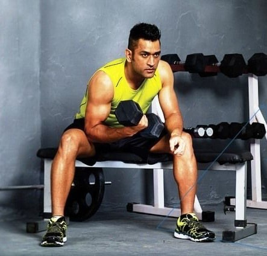
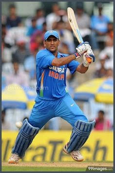

My hobby is playing cricket.I am big fan of Mahendra Singh Dhoni.
 Mahendra Singh Dhoni , commonly known as MS Dhoni, is an Indian international cricketer who captained the Indian national team in limited-overs formats from 2007 to 2016 and in Test cricket from 2008 to 2014. He is Born on 7 July 1981 (age 37 years), Ranchi, India.He is very talented player.